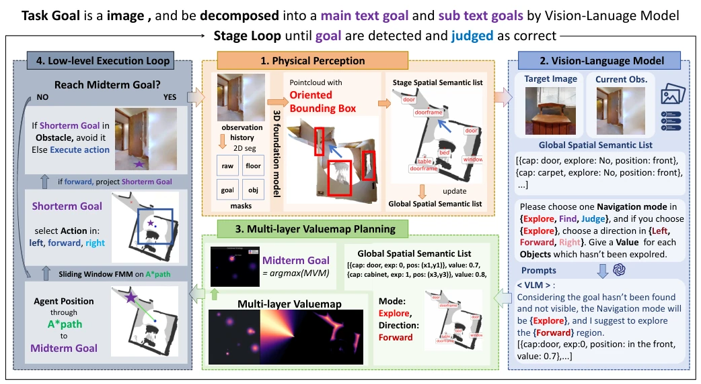
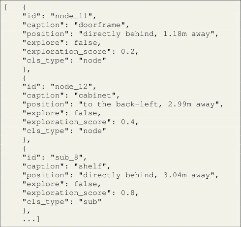
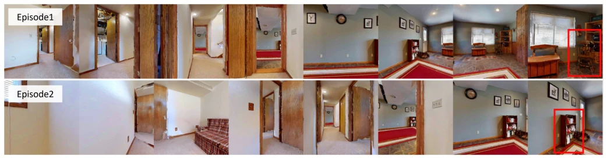
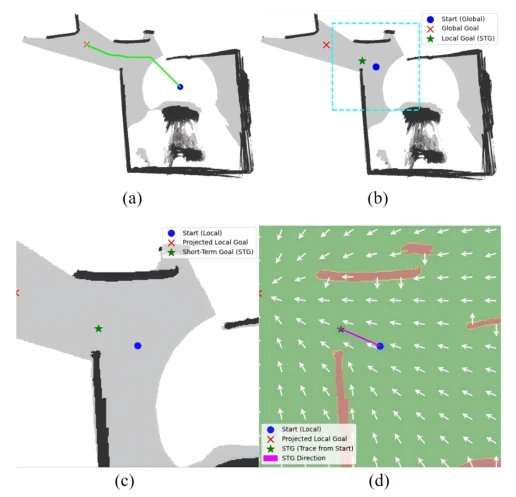

MVP-Nav attempts to address the fatal flaw of RGB-only navigation by inferring 3D structures. It projects 2D images into 3D bounding boxes via VGGT, then uses a VLM to score and construct a value map. This approach is indeed effective, achieving an SR of 65.4% on HM3D, far surpassing PanoNav, and even competing with some RGB-D methods. However, there are also significant drawbacks: it relies on heavy foundation models, with inference latency reaching up to 13 seconds/stage; although parallel optimization was implemented, real-time performance remains concerning. In real-world tests, the success rate in a 60-meter long corridor dropped to 35%, exposing the inherent flaw of monocular depth estimation drift over long distances. This is essentially a "physical perception + semantic planning" stitched solution; while stitched quite robustly, it has not yet reached the level of a "physics engine," and long-distance robustness still requires refinement.
Embodied navigation has long relied on LiDAR or RGB-D to obtain depth [39], but to reduce costs and simulate biological passive vision, RGB-only has become a trend [15, 3]. Existing methods are divided into two categories: semantic-driven (e.g., MLLM parsing) often ignore geometric constraints, leading to "semantically reasonable but physically dangerous" [15]; end-to-end learning (e.g., OmniNav) lacks explicit geometric models, resulting in poor long-range consistency [36]. The core bottleneck lies in the inability of monocular sequences to recover explicit 3D scale, triggering physical uncertainty (distance/scale ambiguity) and semantic-physical misalignment [23]. MVP-Nav aims to compensate for the lack of depth sensors through physical priors, aligning high-level reasoning with low-level physical constraints, to solve the dilemma where existing solutions either separate perception and planning or sacrifice geometric constraints.
MVP-Nav adopts a recursive architecture, divided into four steps: 1. Physical Perception: Use VGGT to regress pseudo-depth and camera parameters, project 2D instances into 3D Oriented Bounding Boxes (OBB), and construct a Global Spatial Semantic List (GSSL) [31]. 2. VLM Inference: GPT-4o-mini evaluates the importance of GSSL entities and determines the navigation mode (explore/seek/judge). 3. Multi-layer Value Map (MVM) Planning: Fuse semantic weights, direction guidance, and passability (based on occupancy maps) into a total value map in product form, avoiding conflicts in traditional potential field methods, and select the mid-term goal gmid. 4. Low-level Execution: A* search for paths, FMM generates smooth trajectories, and verifies safety in real-time through semantic floor mask reprojection to prevent wall collisions. Key innovations lie in the MVM's multiplicative fusion mechanism, ensuring physically unreachable areas are directly zeroed out, and the recursive update mechanism alleviates long-sequence cumulative drift.

Fig. 2: Overview of the MVP-Nav framework. Our system employs a recursive architecture that first transforms monocular RGB sequences into a 3D Global Spatial Semantic List (GSSL) using foundation models. A Vision-Language Model (VLM) then reasons over this list to assign semantic scores and determine the navigation mode. These insights are integrated into a Multi-layer Value Map (MVM) to identify an optimal midterm goal gmid within a unified cost space. Finally, a low-level execution loop performs A∗and FMM planning, ensuring physical safety via real-time semantic floor re-projection.

Fig. 3: An example of a part of GSSL.

Fig. 6: Examples of successful navigation episodes in the HM3D dataset. The trajectories illustrate how MVP-Nav effectively handles diverse indoor layouts.
实验Experiments
在 HM3D、MP3D、RoboTHOR 三个基准测试，指标为 SR 和 SPL。MVP-Nav 在 HM3D 上 SR 达 65.4%，显著优于 PanoNav (43.5%)，甚至超过部分 RGB-D 方法如 SG-Nav (54.0%)。消融实验显示，移除语义重投影会导致 SR 下降，移除 LLM 评分也会大幅降低性能。真实世界测试在 Agibot G1 机器人上进行，图书馆走廊任务成功率 45%，长走廊（60 米）因单目深度漂移导致失败率较高。计算延迟方面，单阶段约 13 秒，通过并行推理缓解卡顿。
Tested on three benchmarks: HM3D, MP3D, RoboTHOR, with metrics SR and SPL. MVP-Nav achieved an SR of 65.4% on HM3D, significantly outperforming PanoNav (43.5%), and even exceeding some RGB-D methods such as SG-Nav (54.0%). Ablation studies show that removing semantic reprojection leads to SR decline, and removing LLM scoring also significantly reduces performance. Real-world tests were conducted on the Agibot G1 robot, with a library corridor task success rate of 45%; long corridors (60 meters) had higher failure rates due to monocular depth drift. Regarding computational latency, a single stage is about 13 seconds, with stuttering alleviated through parallel inference.
其他图片Other Figures

Fig. 5: Visualization of the local goal gst generation. (a) The A∗path from start position to the midterm goal. (b) The silding window of current position. (c) The intersection of sliding window and the A∗